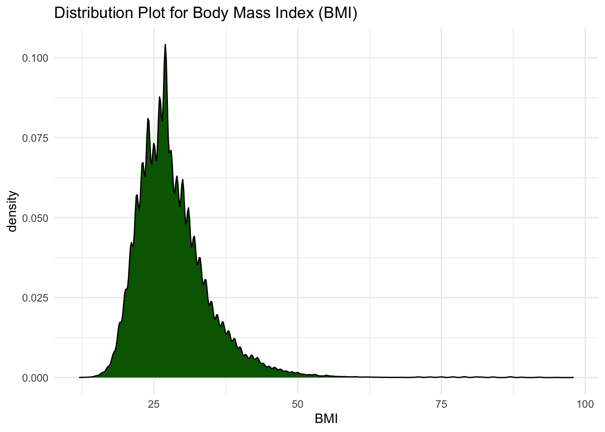
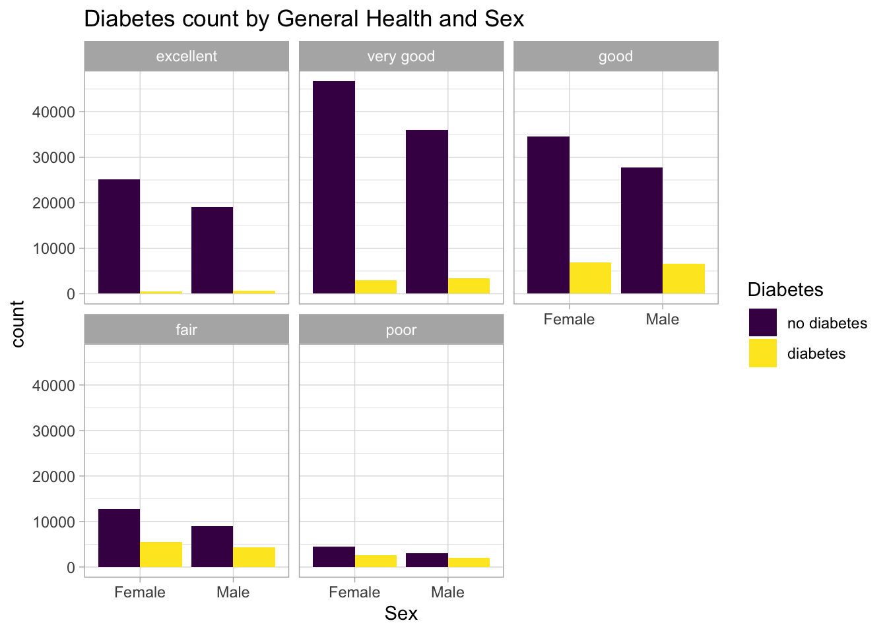
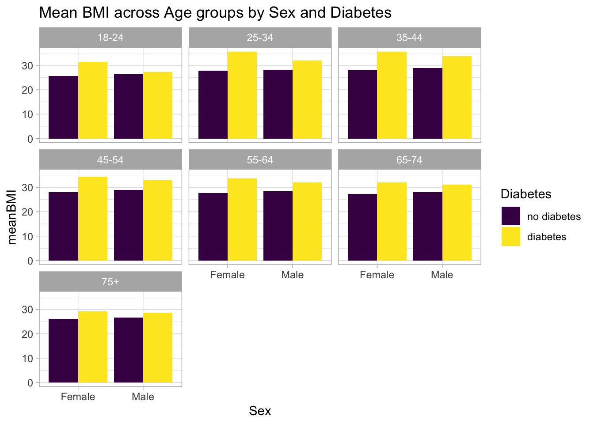
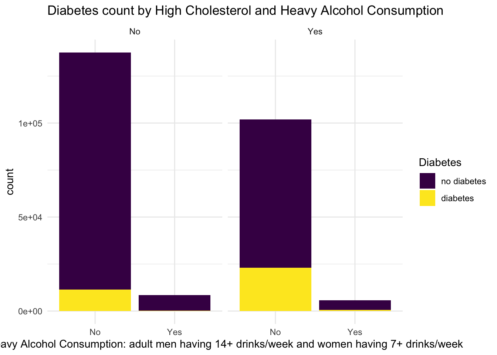
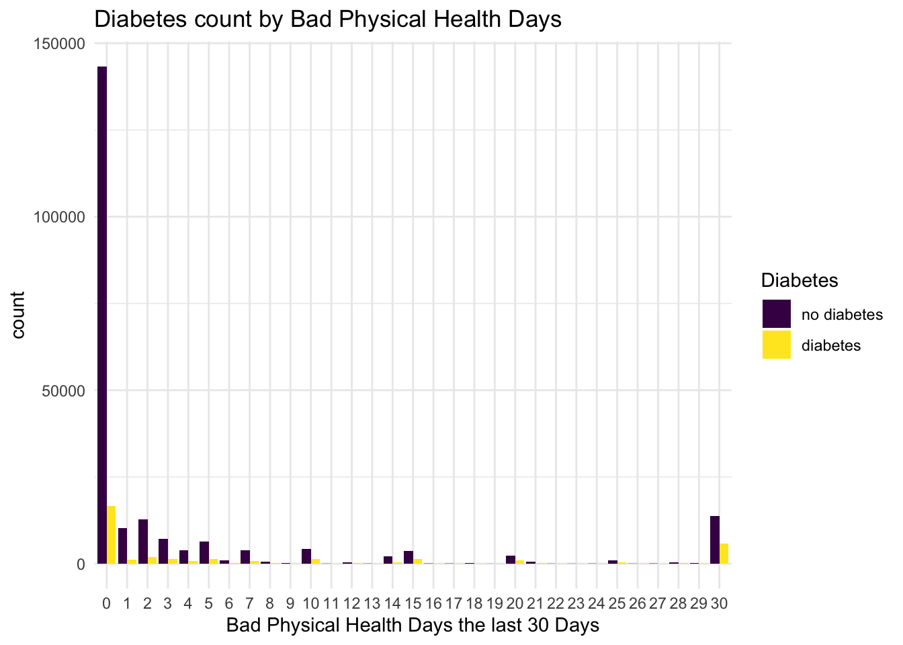
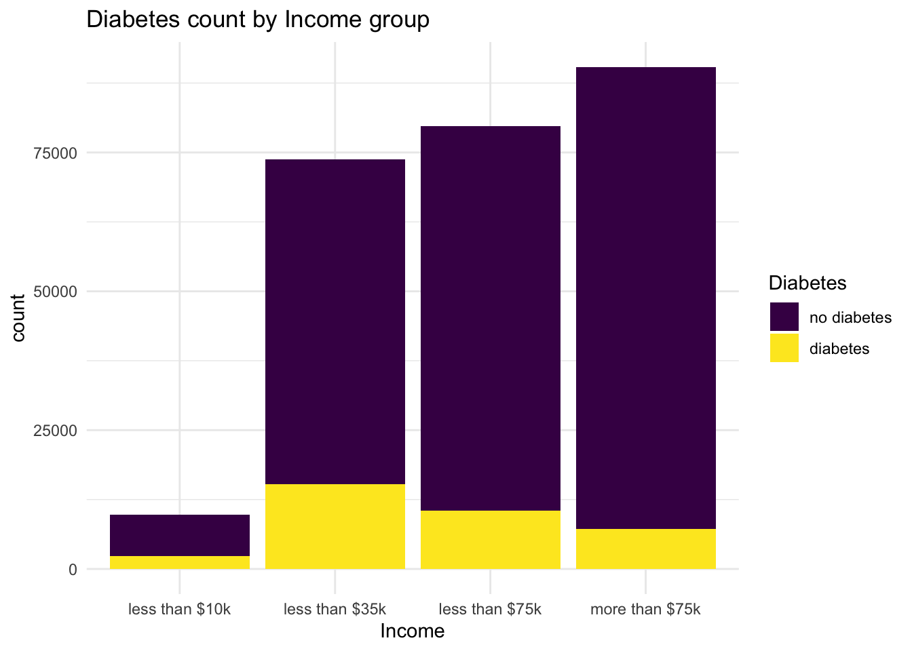

library(readr)
library(tidyr)
library(dplyr)
library(tidyverse)
library(ggplot2)ST 558 Project 3: EDA
Introduction
Dataset
Diabetes is a chronic disease in which individuals lose the ability to effectively regulate levels of glucose in the blood, and is generally characterized by either the body not making enough insulin or being unable to use the insulin that is made as effectively as needed.
**Maybe a graph with the # of Americans with diabetes over the years cdc
This data is based on Behavioral Risk Factor Surveillance System (BRFSS) survey conducted on over 400,000 Americans by the CDC in 2015. This data set as been cleaned and contains 253,680 responses and has a target variable Diabetes_binary with 2 classes: 0 is for no diabetes and 1 is for prediabetes or diabetes.
The main important risk factors we will be investigating are: High Blood Pressure, High Cholesterol, Sex, Age, General Health score, Income, Physical Activity (physical activity in past 30 days - not including job), Fruits (consume fruit daily), Veggies (consume vegetables daily), Smoker (at least 100 cigarets in your life), Stroke (ever had a stroke), Heart Disease or Attack (coronary heart disease (CHD) or myocardial infarction (MI)), Heavy Alcohol Consumption (adult men having 14+ drinks/week and women having 7+ drinks/week), and Body Mass Index (BMI).
[Click here for more information on the data.] (https://www.kaggle.com/datasets/alexteboul/diabetes-health-indicators-dataset/data)
EDA purpose
• describes the purpose of your EDA and ultimate goal of modeling.
Libraries
Load libraries necessary for this analysis.
Data
Read in the diabetes data using a relative path, and convert any variables to a factor if needed.
diabetes_tb <- read_csv("data/diabetes_binary_health_indicators_BRFSS2015.csv", show_col_types = FALSE) |>
select(-c(CholCheck, MentHlth, DiffWalk, NoDocbcCost, Education)) |>
mutate(across(-c(Diabetes_binary, BMI, GenHlth, PhysHlth, Sex, Age, Income), \(x) factor(x, levels = c("0","1"), labels = c("No", "Yes"))),
Diabetes = factor(Diabetes_binary, levels = c(0:1), labels = c("no diabetes", "diabetes")),
GenHlth = factor(GenHlth, levels = c(1:5), labels = c("excellent", "very good", "good", "fair", "poor")),
BadPhysHlthDays = as.factor(PhysHlth),
Sex = factor(Sex, levels = c("0", "1"), labels = c("Female", "Male")),
Age = factor(Age, levels = c(1:13), labels=c("18-24", "25-34", "25-34", "35-44", "35-44", "45-54", "45-54", "55-64", "55-64", "65-74", "65-74", "75+", "75+")),
Income = factor(Income, levels = c(1:8), labels = c("less than $10k","less than $35k", "less than $35k", "less than $35k", "less than $35k", "less than $75k", "less than $75k", "more than $75k" ))) |>
select(-Diabetes_binary, -PhysHlth)Summarize
Understand the data by checking the structure, any missing values, and the summary with respect to the relationships of variables to Diabetes.
#display a few rows of the data, show the column structures and the class
head(diabetes_tb)# A tibble: 6 × 17
HighBP HighChol BMI Smoker Stroke HeartDiseaseorAttack PhysActivity Fruits
<fct> <fct> <dbl> <fct> <fct> <fct> <fct> <fct>
1 Yes Yes 40 Yes No No No No
2 No No 25 Yes No No Yes No
3 Yes Yes 28 No No No No Yes
4 Yes No 27 No No No Yes Yes
5 Yes Yes 24 No No No Yes Yes
6 Yes Yes 25 Yes No No Yes Yes
# ℹ 9 more variables: Veggies <fct>, HvyAlcoholConsump <fct>,
# AnyHealthcare <fct>, GenHlth <fct>, Sex <fct>, Age <fct>, Income <fct>,
# Diabetes <fct>, BadPhysHlthDays <fct>str(diabetes_tb)tibble [253,680 × 17] (S3: tbl_df/tbl/data.frame)
$ HighBP : Factor w/ 2 levels "No","Yes": 2 1 2 2 2 2 2 2 2 1 ...
$ HighChol : Factor w/ 2 levels "No","Yes": 2 1 2 1 2 2 1 2 2 1 ...
$ BMI : num [1:253680] 40 25 28 27 24 25 30 25 30 24 ...
$ Smoker : Factor w/ 2 levels "No","Yes": 2 2 1 1 1 2 2 2 2 1 ...
$ Stroke : Factor w/ 2 levels "No","Yes": 1 1 1 1 1 1 1 1 1 1 ...
$ HeartDiseaseorAttack: Factor w/ 2 levels "No","Yes": 1 1 1 1 1 1 1 1 2 1 ...
$ PhysActivity : Factor w/ 2 levels "No","Yes": 1 2 1 2 2 2 1 2 1 1 ...
$ Fruits : Factor w/ 2 levels "No","Yes": 1 1 2 2 2 2 1 1 2 1 ...
$ Veggies : Factor w/ 2 levels "No","Yes": 2 1 1 2 2 2 1 2 2 2 ...
$ HvyAlcoholConsump : Factor w/ 2 levels "No","Yes": 1 1 1 1 1 1 1 1 1 1 ...
$ AnyHealthcare : Factor w/ 2 levels "No","Yes": 2 1 2 2 2 2 2 2 2 2 ...
$ GenHlth : Factor w/ 5 levels "excellent","very good",..: 5 3 5 2 2 2 3 3 5 2 ...
$ Sex : Factor w/ 2 levels "Female","Male": 1 1 1 1 1 2 1 1 1 2 ...
$ Age : Factor w/ 7 levels "18-24","25-34",..: 5 4 5 6 6 6 5 6 5 5 ...
$ Income : Factor w/ 4 levels "less than $10k",..: 2 1 4 3 2 4 3 2 1 2 ...
$ Diabetes : Factor w/ 2 levels "no diabetes",..: 1 1 1 1 1 1 1 1 2 1 ...
$ BadPhysHlthDays : Factor w/ 31 levels "0","1","2","3",..: 16 1 31 1 1 3 15 1 31 1 ...class(diabetes_tb)[1] "tbl_df" "tbl" "data.frame"#determine if there is any missing data
colSums(is.na(diabetes_tb)) HighBP HighChol BMI
0 0 0
Smoker Stroke HeartDiseaseorAttack
0 0 0
PhysActivity Fruits Veggies
0 0 0
HvyAlcoholConsump AnyHealthcare GenHlth
0 0 0
Sex Age Income
0 0 0
Diabetes BadPhysHlthDays
0 0 #print a table of proportions of each categorical variable with the diabetes response variable
collapse::descr(diabetes_tb, ~ Diabetes, cols = is.factor, compact = TRUE)Dataset: diabetes_tb, 16 Variables, N = 253680
Grouped by: Diabetes [2]
N Perc
no diabetes 218334 86.07
diabetes 35346 13.93
--------------------------------------------------------------------------------
HighBP (factor):
Statistics (N = 253680)
N Perc Ndist
no diabetes 218334 86.07 2
diabetes 35346 13.93 2
Table (Freq Perc)
no diabetes diabetes Total
No 136109 62 8742 25 144851 57
Yes 82225 38 26604 75 108829 43
--------------------------------------------------------------------------------
HighChol (factor):
Statistics (N = 253680)
N Perc Ndist
no diabetes 218334 86.07 2
diabetes 35346 13.93 2
Table (Freq Perc)
no diabetes diabetes Total
No 134429 62 11660 33 146089 58
Yes 83905 38 23686 67 107591 42
--------------------------------------------------------------------------------
Smoker (factor):
Statistics (N = 253680)
N Perc Ndist
no diabetes 218334 86.07 2
diabetes 35346 13.93 2
Table (Freq Perc)
no diabetes diabetes Total
No 124228 57 17029 48 141257 56
Yes 94106 43 18317 52 112423 44
--------------------------------------------------------------------------------
Stroke (factor):
Statistics (N = 253680)
N Perc Ndist
no diabetes 218334 86.07 2
diabetes 35346 13.93 2
Table (Freq Perc)
no diabetes diabetes Total
No 211310 96.8 32078 90.8 243388 95.9
Yes 7024 3.2 3268 9.2 10292 4.1
--------------------------------------------------------------------------------
HeartDiseaseorAttack (factor):
Statistics (N = 253680)
N Perc Ndist
no diabetes 218334 86.07 2
diabetes 35346 13.93 2
Table (Freq Perc)
no diabetes diabetes Total
No 202319 92.7 27468 77.7 229787 90.6
Yes 16015 7.3 7878 22.3 23893 9.4
--------------------------------------------------------------------------------
PhysActivity (factor):
Statistics (N = 253680)
N Perc Ndist
no diabetes 218334 86.07 2
diabetes 35346 13.93 2
Table (Freq Perc)
no diabetes diabetes Total
Yes 169633 78 22287 63 191920 76
No 48701 22 13059 37 61760 24
--------------------------------------------------------------------------------
Fruits (factor):
Statistics (N = 253680)
N Perc Ndist
no diabetes 218334 86.07 2
diabetes 35346 13.93 2
Table (Freq Perc)
no diabetes diabetes Total
Yes 140205 64 20693 59 160898 63
No 78129 36 14653 41 92782 37
--------------------------------------------------------------------------------
Veggies (factor):
Statistics (N = 253680)
N Perc Ndist
no diabetes 218334 86.07 2
diabetes 35346 13.93 2
Table (Freq Perc)
no diabetes diabetes Total
Yes 179105 82 26736 76 205841 81
No 39229 18 8610 24 47839 19
--------------------------------------------------------------------------------
HvyAlcoholConsump (factor):
Statistics (N = 253680)
N Perc Ndist
no diabetes 218334 86.07 2
diabetes 35346 13.93 2
Table (Freq Perc)
no diabetes diabetes Total
No 204910 93.9 34514 97.6 239424 94.4
Yes 13424 6.1 832 2.4 14256 5.6
--------------------------------------------------------------------------------
AnyHealthcare (factor):
Statistics (N = 253680)
N Perc Ndist
no diabetes 218334 86.07 2
diabetes 35346 13.93 2
Table (Freq Perc)
no diabetes diabetes Total
Yes 207339 95.0 33924 96.0 241263 95.1
No 10995 5.0 1422 4.0 12417 4.9
--------------------------------------------------------------------------------
GenHlth (factor):
Statistics (N = 253680)
N Perc Ndist
no diabetes 218334 86.07 5
diabetes 35346 13.93 5
Table (Freq Perc)
no diabetes diabetes Total
very good 82703 37.9 6381 18.1 89084 35.1
good 62189 28.5 13457 38.1 75646 29.8
excellent 44159 20.2 1140 3.2 45299 17.9
fair 21780 10.0 9790 27.7 31570 12.4
poor 7503 3.4 4578 13.0 12081 4.8
--------------------------------------------------------------------------------
Sex (factor):
Statistics (N = 253680)
N Perc Ndist
no diabetes 218334 86.07 2
diabetes 35346 13.93 2
Table (Freq Perc)
no diabetes diabetes Total
Female 123563 57 18411 52 141974 56
Male 94771 43 16935 48 111706 44
--------------------------------------------------------------------------------
Age (factor):
Statistics (N = 253680)
N Perc Ndist
no diabetes 218334 86.07 7
diabetes 35346 13.93 7
Table (Freq Perc)
no diabetes diabetes Total
55-64 54080 24.77 9996 28.28 64076 25.26
65-74 44028 20.17 11699 33.10 55727 21.97
45-54 41303 18.92 4830 13.66 46133 18.19
75+ 26731 12.24 6612 18.71 33343 13.14
35-44 28303 12.96 1677 4.74 29980 11.82
25-34 18267 8.37 454 1.28 18721 7.38
18-24 5622 2.57 78 0.22 5700 2.25
--------------------------------------------------------------------------------
Income (factor):
Statistics (N = 253680)
N Perc Ndist
no diabetes 218334 86.07 4
diabetes 35346 13.93 4
Table (Freq Perc)
no diabetes diabetes Total
more than $75k 83190 38.1 7195 20.4 90385 35.6
less than $75k 69133 31.7 10556 29.9 79689 31.4
less than $35k 58583 26.8 15212 43.0 73795 29.1
less than $10k 7428 3.4 2383 6.7 9811 3.9
--------------------------------------------------------------------------------
Diabetes (factor):
Statistics (N = 253680)
N Perc Ndist
no diabetes 218334 86.07 1
diabetes 35346 13.93 1
Table (Freq Perc)
no diabetes diabetes Total
no diabetes 218334 100 0 0 218334 86
diabetes 0 0 35346 100 35346 14
--------------------------------------------------------------------------------
BadPhysHlthDays (factor):
Statistics (N = 253680)
N Perc Ndist
no diabetes 218334 86.07 31
diabetes 35346 13.93 31
Table (Freq Perc)
no diabetes diabetes Total
0 143312 65.64 16740 47.36 160052 63.09
30 13674 6.26 5726 16.20 19400 7.65
2 12736 5.83 2028 5.74 14764 5.82
1 10200 4.67 1188 3.36 11388 4.49
3 7206 3.30 1289 3.65 8495 3.35
5 6308 2.89 1314 3.72 7622 3.00
10 4305 1.97 1290 3.65 5595 2.21
15 3621 1.66 1295 3.66 4916 1.94
4 3779 1.73 763 2.16 4542 1.79
7 3795 1.74 743 2.10 4538 1.79
20 2356 1.08 917 2.59 3273 1.29
14 2114 0.97 473 1.34 2587 1.02
25 942 0.43 394 1.11 1336 0.53
6 1048 0.48 282 0.80 1330 0.52
... 17 Others 2938 1.35 904 2.56 3842 1.51
Summary of Table Frequencies
no diabetes diabetes Total
Min. : 19.0 Min. : 3 Min. : 22.0
1st Qu.: 73.5 1st Qu.: 25 1st Qu.: 97.5
Median : 524.0 Median : 143 Median : 663.0
Mean : 7043.0 Mean : 1140 Mean : 8183.2
3rd Qu.: 3787.0 3rd Qu.: 1052 3rd Qu.: 4729.0
Max. :143312.0 Max. :16740 Max. :160052.0
--------------------------------------------------------------------------------#View basic contingency summary tables
##view the count of Diabetes by General Health and Sex
table(diabetes_tb$GenHlth, diabetes_tb$Diabetes, diabetes_tb$Sex, dnn=c("General Health", "Diabetes", "Sex")), , Sex = Female
Diabetes
General Health no diabetes diabetes
excellent 25106 449
very good 46723 3017
good 34507 6865
fair 12785 5529
poor 4442 2551
, , Sex = Male
Diabetes
General Health no diabetes diabetes
excellent 19053 691
very good 35980 3364
good 27682 6592
fair 8995 4261
poor 3061 2027round(proportions(table(diabetes_tb$Age, diabetes_tb$Diabetes))*100,3)
no diabetes diabetes
18-24 2.216 0.031
25-34 7.201 0.179
35-44 11.157 0.661
45-54 16.282 1.904
55-64 21.318 3.940
65-74 17.356 4.612
75+ 10.537 2.606##view the mean BMI across Age groups by Sex and Diabetes
diabetes_tb |>
group_by(Diabetes, Sex, Age) |>
summarize(meanBMI = mean(BMI), .groups = 'drop') |>
pivot_wider(names_from = Age, values_from = meanBMI)# A tibble: 4 × 9
Diabetes Sex `18-24` `25-34` `35-44` `45-54` `55-64` `65-74` `75+`
<fct> <fct> <dbl> <dbl> <dbl> <dbl> <dbl> <dbl> <dbl>
1 no diabetes Female 25.7 27.8 28.0 28.0 27.8 27.3 26.0
2 no diabetes Male 26.3 28.1 28.9 29.0 28.5 28.0 26.7
3 diabetes Female 31.5 35.6 35.6 34.4 33.7 32.0 29.2
4 diabetes Male 27.2 32.1 33.7 33.0 32.1 31.1 28.7Visualize
Create plots to visualize the data.
#Numerical Data
diabetes_tb |>
ggplot(aes(x = BMI)) +
geom_density(color = "black", fill = "dark green") +
ggtitle("Distribution Plot for Body Mass Index (BMI)") +
theme_minimal()
#Categorical Data
ggplot(data = diabetes_tb |>
group_by(GenHlth, Sex, Diabetes) |>
summarize(count = n(), .groups = 'drop'), aes(x = Sex, y = count, fill = Diabetes)) +
geom_bar(stat = "identity", position = "dodge") +
facet_wrap(~ GenHlth) +
ggtitle("Diabetes count by General Health and Sex") +
scale_fill_viridis_d() +
theme_light()
ggplot(data = diabetes_tb |>
group_by(Diabetes, Sex, Age) |>
summarize(meanBMI = mean(BMI), .groups = 'drop'), aes(x = Sex, y = meanBMI, fill = Diabetes)) +
geom_bar(stat = "identity", position = "dodge") +
facet_wrap(~ Age) +
ggtitle("Mean BMI across Age groups by Sex and Diabetes") +
scale_fill_viridis_d() +
theme_light()
ggplot(data = diabetes_tb |>
group_by(Diabetes, HighChol, HvyAlcoholConsump) |>
summarize(count = n(), .groups = 'drop'), aes(x = HvyAlcoholConsump, y = count, fill = Diabetes)) +
geom_bar(stat = "identity") +
facet_wrap(~ HighChol) +
ggtitle("Diabetes count by High Cholesterol and Heavy Alcohol Consumption") +
scale_fill_viridis_d() +
labs(x = "Heavy Alcohol Consumption: adult men having 14+ drinks/week and women having 7+ drinks/week")+
theme_minimal()
ggplot(data = diabetes_tb |>
group_by(Diabetes, BadPhysHlthDays) |>
summarize(count = n(), .groups = 'drop'), aes(x = BadPhysHlthDays, y = count, fill = Diabetes)) +
geom_bar(stat = "identity", position = "dodge") +
ggtitle("Diabetes count by Bad Physical Health Days") +
labs(x = "Bad Physical Health Days the last 30 Days") +
scale_fill_viridis_d() +
theme_minimal()
ggplot(data = diabetes_tb |>
group_by(Diabetes, Income) |>
summarize(count = n(), .groups = 'drop'), aes(x = Income, y = count, fill = Diabetes)) +
geom_bar(stat = "identity") +
ggtitle("Diabetes count by Income group") +
scale_fill_viridis_d() +
theme_minimal()
Review EDA
From the exploratory analysis, we see that there is no missing data, and only one numerical variable, BMI, which seems to follow a normal distribution with a mean of 28.4. From the proportions table, a majority of people who have diabetes have high blood pressure, high cholesterol, are physically active, consume vegetables daily, general health of good or fair, in between ages 55-74, and don’t have any bad physical health days. All other variables were not as significantly different proportionally when looking at diabetes.
There are many categorical variables, so several were selected for this analysis including: Sex, Age, General Health, High Cholesterol, Heavy Alcohol Consumption, Physical Health, and Income. From the first contingency table and the corresponding bar plot, we see an increase in diabetes counts as the general health diminishes from excellent to good. However, the amount of people with diabetes decreases as general health decreases from good to poor. Also, males are more likely to have diabetes than females, which can be seen in all the visuals. The second plot and contingency table show that the average BMI is higher for both male and female for people wit diabetes across all age groups. Based on the other visuals, it does not seem that heavy alcohol consumption or bad physical health days contributes to diabetes. When comparing incomes, it does seem that lower income groups are more likely to have diabetes than people that make more than $75,000.